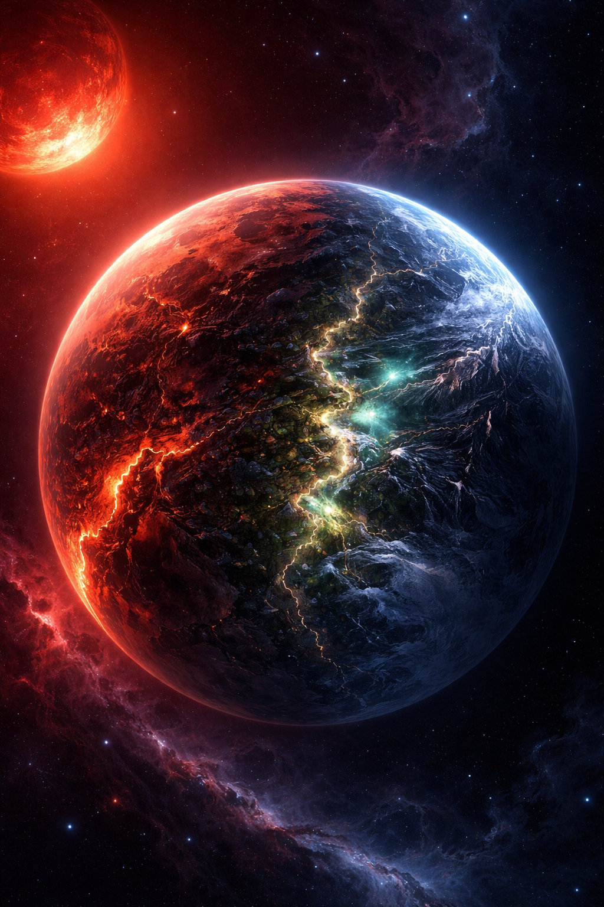
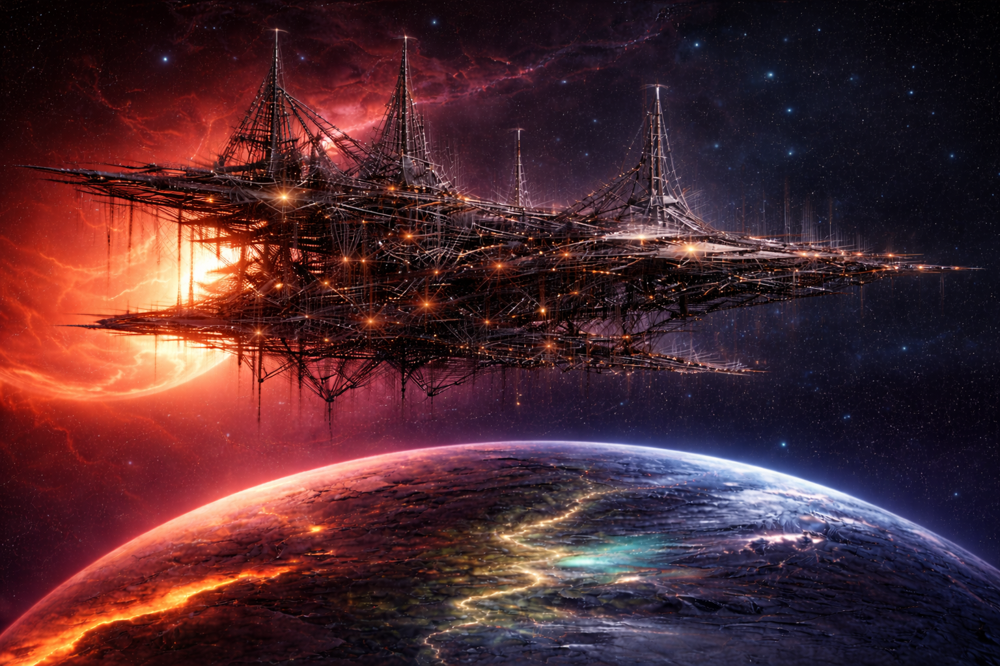

Description
Status: Tidally locked
Classification: Ribbon World
Sun: Red Dwarf
Moon: none
Nyra is a world forever bound to its red star, locked in an eternal embrace that allows no dawn and no dusk—only permanence. One hemisphere faces the star without reprieve, its surface reduced to oceans of molten stone, fractured continents glowing with slow-moving rivers of fire beneath a sky stained crimson by constant solar fury. The opposite side lies in endless darkness, a frozen realm where temperatures never rise, where mountains of black ice and crystal frost stand silent beneath a starless void.
Between these extremes lies Nyra’s only refuge: a narrow, unbroken band of twilight circling the planet like a scar of fragile balance. Here, heat and cold wage a ceaseless but measured struggle, giving rise to turbulent winds, vast storms, and fleeting pockets of stability. It is within this dim, perpetual dusk—neither fully day nor night—that liquid water may persist, and where life, stubborn and adaptive, might cling to existence against all odds.

The Ark Above Nyra
Hope is a colossal interstellar vessel under construction in orbit above Nyra. Unfinished yet already immense, its skeletal frame is bound to a vast lattice of superstructure—girders and support beams stretching outward like veins of steel cast against the void. It is neither station nor city, but the foundation of a ship built for survival.
Scattered lights glimmer along its surface. Men and women in pressure suits move across exposed beams, their torches flaring as welders scatter sparks into the darkness. They are dwarfed by the enormity of the vessel, yet their labor gives it purpose—survivors building not for conquest or expansion, but for endurance.
Hope was conceived as an answer to inevitability. Nyra is not a permanent refuge. In one hundred and fifty years, Nyros will sweep close to Aethera once more, and its solar flares will scour the planet clean. No shelter or adaptation can withstand that fire. Survival demands departure.
Designed to carry an entire people beyond a dying sky, Hope’s unfinished ribs stretch for kilometers, each beam a promise of motion yet to come. Even in its skeletal state, it stands as both monument and warning—a testament to desperation, memory, and resolve. Its construction will span fifty years.
When completed, Hope will rise not as an escape from the past, but as the means by which it endures.